산업안전산업기사 (2004-05-23 기출문제)
1과목: 산업안전관리론
1. Edword Adams의 이론은 Bird's이론에 어떤 개념을 도입 하였는가?
- 예방의 개념
- 대책선정의 개념
- 손실제어의 개념
- 관리잘못의 개념
(정답률: 33%)

2. 무재해 운동을 추진하기 위한 세가지의 기둥에 해당되지 않는 것은?
- 최고 경영자의 경영자세
- 직장 자주 활동의 활발화
- 라인 관리자에 의한 안전보건 추진
- 직장 상,하간의 체계확립 및 명령이행
(정답률: 66%)
3. Herzberg가 말한 동기요인에 해당하는 것은?
- 일의 내용
- 복지제도
- 관리내용
- 급료
(정답률: 38%)
4. 다음 중 맥그리거(Mcgregor)의 인간해석 중 Y이론의 관리 처방은?
- 조직구조의 고층성
- 분권화와 권한의 위임
- 경제적 보상체제의 강화
- 권위주의적 리더쉽의 확립
(정답률: 47%)
5. 다음 안전관리 조직 중 가장 이상적인 조직 형태는?
- 직계형 조직
- 직능전문화 조직
- 라인스태프형 조직
- 테스크포스(task-force)조직
(정답률: 80%)
6. 다음 설명 중 옳은 것은?
- 휘광이란 눈부심을 말하는 것으로 성가신 느낌, 시성능 저하등을 초래한다.
- 피로는 정신적 피로와 육체적 피로로 구분되며, 피로감은 육체적 요인에 의한 주관적 요소이다.
- 열압박이란 열에 의한 신체가 받는 압박으로 체감온도가 40℃만 되면 열압박으로 인해 기진하게된다.
- 광속발산도는 광원으로부터 1foot 떨어진 곡면에서 발산하는 빛의 양이다.
(정답률: 42%)
7. 안전교육의 기본과정을 옳게 나열한 것은?
- 청취한다 → 이해 납득시킨다 → 모범을 보인다 → 평가한다
- 이해 납득한다 → 들어본다 → 시범을 보인다 → 평가한다
- 청취한다 → 모범을 보인다 → 이해 납득시킨다 → 평가한다
- 모범을 보인다 → 이해 납득시킨다 → 들어본다 → 평가한다
(정답률: 63%)
8. 교육 4단계 중 적용에 해당되는 설명은?
- 내용을 확실하게 이해시키고 납득시키는 단계
- 관심과 흥미를 가지고 심신의 여유를 주는 단계
- 과제를 주어 문제해결을 시키거나 습득시키는 단계
- 연수내용을 정확하게 이해하였는가를 테스트하는 단계
(정답률: 52%)
9. 리더쉽을 결정하는 요인으로서 관계가 먼 것은?
- 지도자
- 추종자(follower)
- 설득력
- 상황(situation)
(정답률: 38%)
10. 일반적으로 교육이란 "인간행동의 계획적 변화"로 정의할 수 있다. 여기서 인간의 행동이 의미하는 것은?
- 신념과 태도
- 외현적행동만 포함
- 내현적행동만 포함
- 내현적, 외현적행동 모두 포함
(정답률: 69%)
11. 다음 중 행동의 변화가 가장 어려운 경우는?
- 지식변화
- 집단행동변화
- 태도변화
- 개인행동변화
(정답률: 73%)
12. 기업 내 정형교육 가운데 TWI의 교육내용에 해당하지 않는 것은?
- 작업지도 기법(JIT)
- 작업개선 방법(JMT)
- 부하직원 통솔기법(JRT)
- 작업환경 개선기법(JET)
(정답률: 43%)
13. 1000명의 근로자가 상시 근무하는 A기업에서 질병· 기타 사유로 인하여 5%의 결근율을 나타내고 있다. 이 회사에서 년간 60건의 재해가 발생하였다면 이 기업체의 도수율은? (단, 근로자가 1주일에 48시간, 연간 50주를 근로함)
- 25
- 26.32
- 50
- 51
(정답률: 66%)
14. 안전표지의 종류 중에 직접 위험한 것 및 장소 또는 상태에 대한 것을 표시하는데 사용되는 것은?
- 금지표지
- 경고표지
- 지시표지
- 안내표지
(정답률: 60%)
15. 평균 근로자 수가 1500명인 어떤 사업장의 도수율이 12.5이고 강도율이 8.5 이었을 때 이 사업장의 근로 손실일수는 얼마인가? (단, 년간 1인 근로시간수는 2400시간이다.)
- 30600
- 3060
- 30.6
- 306
(정답률: 30%)
16. 하버드대학에서 개발된 교육기법으로 고도의 판단력을 양성할 수 있는 특색을 갖는 것은?
- 역할연기
- 시청각 교육
- 비지니스 게임
- 사례연구
(정답률: 33%)
17. 산업재해발생의 심리학적 요소에 해당되지 않는 것은?
- 병리적 요인(pathological factors)
- 신체적 요인(physical factors)
- 생물학적 요인(biological factors)
- 사회심리적 요인(social phychological factors)
(정답률: 37%)
18. 사고의 본질적 특성을 설명한 것 중 잘못 설명된 것은?
- 사고의 공간성
- 우연성 중의 법칙성
- 필연성 중의 우연성
- 사고의 재현 불가능성
(정답률: 25%)
19. 『지적· 확인』이 불안전 행동 방지에 효과가 있는 이유로 맞지 않는 것은?
- 의식의 강화효과
- 인지(cognition)확률의 향상
- 자신과 대상의 결합도 증대
- 긴장된 의식을 이완시켜 줌
(정답률: 67%)
20. 학습 방법 가운데 분습법의 장점에 해당되지 않는 것은?
- 시간의 노력이 적다.
- 길고 복잡한 학습에 알맞다.
- 어린이는 분습법을 좋아한다.
- 주의의 범위가 적어서 적당하다.
(정답률: 35%)
2과목: 인간공학 및 시스템안전공학
21. 다음중 감시체계를 보다 효과적으로 설계하기 위한 지침으로 틀린 것은?
- 시신호는 합리적으로 가능한 한 커야한다. (크기, 강도 및 지속시간을 포함)
- 시신호는 보이거나 탐지될때 까지 지속되거나 합리적으로 가능한 한 오래 지속되어야 한다.
- 시신호의 경우 신호가 나타날 수 있는 구역이 가능한 한 넓어야 한다.
- 통상 실제신호 빈도를 통제하기는 힘들지만 가능하다면 시간당 최소 20회의 신호빈도를 유지 하는 것이바람직하다.
(정답률: 29%)
22. 기계설비의 본질 안전화를 진전시키기 위하여 검토하여야 할 사항은?
- 재료, 제품, 공구 등을 놓아둘 공간을 충분히 확보할 것
- 작업자측에 실수나 잘못이 있어도 기계설비측에서 이를 배제하여 안전을 확보할 것
- 안전한 통로를 설정하고, 또한 작업장소와 통로는 명확히 구분 할 것
- 작업의 흐름에 따라 기계설비를 배치시켜 필요 없는 운반작업을 극력 배제할 것
(정답률: 45%)
23. 다음 중 Fail-safe의 원리가 아닌 것은?
- 다경로하중 구조
- 시건 구조
- 교대 구조
- 하중 경감구조
(정답률: 38%)
24. 다음중 크기를 이용한 조종장치의 크기차이를 정확히 구별할 수 있는 직경과 두께에 해당하는 것은?
- 직경 : 1.3cm, 두께 : 0.95cm
- 직경 : 1.3cm, 두께 : 1.95cm
- 직경 : 13cm, 두께 : 0.95cm
- 직경 : 13cm, 두께 : 1.95cm
(정답률: 53%)
25. 다음 시스템의 신뢰도는? (단, 두 부품의 고장은 독립이라고 가정한다.)
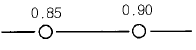
- 0.765
- 0.865
- 0.875
- 0.992
(정답률: 58%)
26. 인간의 과오를 평가하기 위한 정량적 해석방법은?
- THERP
- MORT
- CA
- Decision Tree
(정답률: 71%)
27. 어떤 장치의 이상을 알려주는 경보기가 있어서 그것이 울리면 일정시간 이내에 장치를 정지하고 상태를 점검하여 필요한 조치를 하게 된다. 그런데 담당 작업자가 정지조작을 잘못하여 장치에 고장이 발생하였다. 이때 작업자가 조작을 잘못한 실수를 무엇이라고 하는가?
- primary error
- secondary error
- command error
- omission error
(정답률: 37%)
28. 시스템 안전 달성을 위한 시스템 안전 설계 단계중 위험 상태의 최소화 단계에 해당하는 것은?
- 경보장치
- 페일세이프
- 안전장치
- 특수수단강구
(정답률: 62%)
29. 시스템의 구상단계에서 이루어진 결정 사항에 따라서 정해진 최적 시스템에 대하여 발생될 수 있을 것으로 생각 되는 사고를 광범위하게 최초로 정의하는 위험 분석은?
- 예비위험분석
- 디시젼트리분석
- 운용안전성분석
- 고장의 형과 영향분석
(정답률: 68%)
30. 작업대가 부적절하게 높은 경우 취해지는 자세와 거리가 먼 것은?
- 가슴이 압박 받음
- 겨드랑이를 벌린 상태
- 앞가슴을 위로 올리는 경향
- 머리를 들고 가슴, 어깨를 일으키는 자세
(정답률: 52%)
31. 표시장치의 신호체계 설계의 지침중 부호의 양립성(compatibility)을 설명한 것 중 올바른 것은?
- 암호표시는 감지가 쉬워야 한다.
- 암호표시는 감지와 변별이 잘 되어야 한다.
- 암호표시는 다른 자극과 구별이 용이해야 한다.
- 암호표시는 인간의 기대와 모순되지 않아야 한다.
(정답률: 32%)
32. 정적자세를 유지 할 때의 진전(tremor)을 감소시킬수 있는 방법과 거리가 먼 것은?
- 시각적으로 참조한다.
- 근로자가 떨지 않으려고 노력한다.
- 손을 심장 높이가 되도록 유지한다.
- 작업대상물에 기계적 마찰이 있도록 한다.
(정답률: 28%)
33. 화학 설비의 안전성 평가 5단계중 제 4단계인 안전대책은 정량적 평가결과 나타난 위험등급에 따라 대책을 수립해야 하는데, 어떠한 대책을 수립해야 하는가?
- 관리적 대책, 교육적 대책
- 교육적 대책, 정신적 대책
- 교육적 대책, 설비 등에 관한 대책
- 관리적 대책, 설비 등에 관한 대책
(정답률: 47%)
34. 작업을 하는 자세는 작업의 종류에 따라 다르다. 작업의 자세를 결정하는 조건으로 맞지 않는 것은?
- 작업의 정밀도
- 작업의 중요성
- 작업 기술과 작업자의 능률
- 작업자와 작업점의 거리 및 높이
(정답률: 40%)
35. 시스템 안전분석에 이용되는 FMEA의 기법중 장점에 해당 되는 것은?
- 서식이 간단하다.
- 논리성이 다양하다.
- 요소가 물체로 한정되어 있다.
- 각 요소간 분석이 용이하다.
(정답률: 41%)
36. 높은 소음으로 생긴 생리적 변화가 아닌 것은?
- 근육이완
- 혈압상승
- 동공팽창
- 심장박동수 증가
(정답률: 60%)
37. 어느 부품 15000개를 1만시간 가동중에 15개의 불량품이 발생하였다. 평균 고장시간(MTBF)은?
- 1 × 106 시간
- 2 × 106 시간
- 1 × 107 시간
- 2 × 107 시간
(정답률: 45%)
38. 그림에 있는 조종구(ball control)와 같이 상당한 회전운동을 하는 조종장치가 선형표시장치를 움직일 때는 L을 반경(지레의 길이), a를 조정장치가 움직인 각도라 할 때 조종표시 장치의 이동비율(control display ratio)을 나타낸 것은?
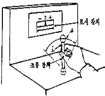
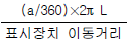
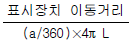
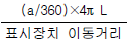
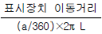
(정답률: 63%)
39. 다음 중 신뢰도 구조상으로 직렬인 것은?
- 요원중복
- 자동차의 네바퀴
- 자동차의 브레이크 시스템
- 2개의 연결된 회로 차단기
(정답률: 35%)
40. 4m 거리에서 조도가 60lux이라면 2m에서는 조도가 얼마인가?
- 150 lux
- 240 lux
- 320 lux
- 480 lux
(정답률: 67%)
3과목: 기계위험방지기술
41. 가스용접작업 중 불꽃에 산소의 양이 많게 되면 어떤 결과를 가져오는가?
- 용접부에 기공이 생긴다.
- 아세틸렌의 소비가 많아진다.
- 용접봉의 소비가 많아진다.
- 용제의 사용이 필요없게 된다.
(정답률: 55%)
42. 압력용기에 설치하는 압력방출장치의 작동 설정점은?
- 상용압력 초과시
- 최고사용압력 이전
- 최고사용압력 초과시
- 최고사용압력의 110%
(정답률: 40%)
43. 강(Steel)의 탄소 함유량을 증가시킬때 다음의 기계적 성질중 감소되는 것은?
- 인장강도
- 항복강도
- 경도
- 충격치
(정답률: 26%)
44. 광전자식 프레스 안전장치에서 광축간의 거리는?
- 8 mm 이상
- 8 mm 이하
- 20 mm 이상
- 20 mm 이하
(정답률: 34%)
45. 기계 설비의 안전조건에서 외형의 안전화 방법이 아닌 것은?
- 덮개
- 상자로 내장
- 색채 조절
- Fail Safe화
(정답률: 57%)
46. 금속으로 된 봉(棒)이 있다. 단면의 모양이 원형이며, 봉의 길이는 100 mm 이다. 이 금속봉에 인장력을 가했을 때, 봉의 길이가 0.1 mm 늘어났다. 이 때 종변형률의 크기는?
- 0.1 mm
- 0.1 %
- 0.001 mm
- 0.001 %
(정답률: 43%)
47. 선반 작업시 주의사항으로 틀린 것은?
- 돌리개를 적당한 크기의 것을 선택하고, 심압대 스핀들은 가능하면 길게 나오도록 한다.
- 칩(chip)이 비산시에는 보안경을 쓰고 방호판을 설치 사용한다.
- 공작물의 설치가 끝나면, 척에서 렌치류는 곧 제거 한다.
- 작업중에 가공품을 직접 만지지 않는다.
(정답률: 69%)
48. 드릴의 수명을 표시할 때 맞는 것은? (단, T:공구수명(min), t:드릴 1개로 가공할수 있는 길이(mm), S:이송(mm/rev), n:회전수(rpm),d:드릴의 지름,υ = 절삭속도(m/min))
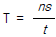
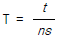
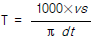
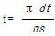
(정답률: 39%)
49. 다음 수공구 중 재료를 꺼내는 것 밖에 사용할 수 없는 것은?
- 마그네틱 공구
- 진공컵
- 플라이어
- 핀셋
(정답률: 37%)
50. 공작물을 연삭할 때 가공물 지지점이 되도록 받쳐주는 워크레스트(Workrest)는 어느 연삭기에서 사용하는가?
- 센터리스 연삭기
- 휴대용 연삭기
- 평면 연삭기
- 탁상용 연삭기
(정답률: 45%)
51. 기계설비의 근원적 안전화 내용에 포함되지 않는 것은?
- 안전기능의 기계설비에 내장
- 풀 푸루프(Fool proof)기능
- 페일세이프(Fail safe)기능
- 안전장치의 일정방식
(정답률: 57%)
52. 안전율(허용응력) 결정시 고려해야 할 사항에 속하지 않는 것은?
- 재료의 품질
- 하중과 응력의 정확성
- 공작방법 및 정밀도
- 사용시의 상태
(정답률: 31%)
53. 안전계수 5인 체인의 최대 설계응력이 100kg이라면 이 체인의 극한 강도는 얼마인가?
- 500kg
- 600kg
- 700kg
- 800kg
(정답률: 77%)
54. 양중기의 자체검사 사항이 아닌 것은?
- 브레이크 이상 유무
- 달기기구 손상유무
- 달기체인 변형유무
- 중량물 이동거리
(정답률: 73%)
55. 기계 대패작업 중 작업자가 가장 사고를 일으키기 쉬운 때는?
- 가공을 시작할 때
- 가공이 거의 끝날 때
- 가공 중 전 작업과정 중에
- 가공이 중간 쯤 진행되고 있을 때
(정답률: 60%)
56. 산업용로봇에 접근하여 위해를 당할 우려에 대비해서, 사용할 수 있는 안전장치로 적합하지 않은 것은?
- 안전방책
- 초음파센서
- 안전매트
- 안전블록
(정답률: 48%)
57. 어떤 로프의 안전하중이 200㎏이고, 파단하중이 600㎏일 때 이 로프의 안전율은?
- 400
- 0.3
- 3
- 300
(정답률: 70%)
58. 취급운반의 5원칙 중 관계가 먼 것은?
- 연속운반으로 할 것
- 직선운반으로 할 것
- 운반작업을 집중화 할 것
- 손이 닿는 운반 방식으로 할 것
(정답률: 56%)
59. 기계의 기능적 안전화를 위해서 해야 할 조치사항은 무엇인가?
- 안전장치
- 안전배치
- 조작의 안전화
- 안전설계
(정답률: 42%)
60. 다음 중 보일러의 부식원인으로 가장 적당한 것은?
- 급수처리를 하지 않은 물을 사용할 때
- 수면계의 고장으로 드럼내의 물의 감소
- 압력계의 고장으로 기능이 불안전할 때
- 증기발생이 너무 고온일 때
(정답률: 46%)
4과목: 전기 및 화학설비위험방지기술
61. 건조설비 및 그 부속설비의 자체검사에 대한 내용 중 틀린 것은?
- 2년에 1회 이상 실시한다.
- 내부온도 측정장치 및 조정장치의 이상유무 확인
- 외부에 설치하는 전기기계· 기구, 배선의 이상유무 확인
- 내면 및 외면과 내부의 선반, 틀 등의 손상, 변형 또는 부식의 유무
(정답률: 21%)
62. 화학설비 또는 배관의 덮개, 플렌지, 밸브 및 코크의 접합부에서의 위험물 누출로 인한 화재 폭발을 방지하기 위한 조치는?
- 코크 사용
- 호스 스크립사용
- 호스 밴드 사용
- 가스켓 사용
(정답률: 63%)
63. 정전기에 의한 재해의 방지법에 해당하지 않는 것은?
- 접지
- 단로기
- 가습
- 제전기의 사용
(정답률: 59%)
64. 페인트를 스프레이로 뿌려 도장작업을 하는 작업 중 발생하는 정전기 대전으로 짝지은 것은?
- 박리대전· 분출대전
- 유동대전· 분출대전
- 충돌대전· 분출대전
- 유도대전· 분출대전
(정답률: 62%)
65. 누전으로 인해 목재등이 탄화되어 화재가 발생하는 것은 어떤 현상에 의한 것인가?
- 가네하라현상
- 트러킹현상
- 절연열화현상
- 흡습현상
(정답률: 41%)
66. 다음 중 화학설비의 부속설비가 아닌 것은?
- 압축기 등 화학물질 압축설비
- 배관 등 화학물질 이송관련 설비
- 가스 누출감지 및 경보관련 설비
- 사이크론, 백필터, 전기집진기등의 분진처리 설비
(정답률: 30%)
67. 전기화재에서 출화의 경과에 대한 화재예방대책에 해당하지 않는 것은?
- 단락 및 혼촉을 방지한다.
- 누전사고의 요인을 제거한다.
- 전기코드의 과열, 합선을 막는다.
- 접촉불량방지와 안전점검을 철저히 한다.
(정답률: 18%)
68. 정전기로 인한 재해의 방지대책으로 옳지 않은 것은?
- 접지
- 보호구의 착용
- 배관내 액체의 유속증가
- 습도가 70%정도 되도록 함
(정답률: 70%)
69. 다음중 화학설비의 안전 장치로서 파열판을 설치해야 할 경우가 아닌 것은?
- 급격한 압력 상승의 우려가 있는 경우
- 내부 물질이 액체와 분말의 혼합 상태인 경우
- 방출량이 많고 순간적으로 많은 방출이 필요한 경우
- 액체의 열팽창에 의한 압력 상승 방지를 해야하는 경우
(정답률: 26%)
70. 황린(P4)의 저장 및 취급방법중 옳지 않은 것은?
- 직사광선을 피하고 환기시킨다.
- 산화제, 폭발물과의 저장을 금한다.
- 자연발화하므로 건조한 곳에 저장한다.
- 포스핀생성을 방지하기 위해 저장용액의 액성을 약알칼리성으로 한다.
(정답률: 63%)
71. 분말소화약제의 소화효과중에서 주요 작용은?
- 희석작용
- 연소억제작용
- 질식, 냉각작용
- 화염의 불안정화 작용
(정답률: 49%)
72. 운전하고 있던 탈수기가 정지하여 탈수기용 개폐기를 수 차례 개폐조작 중 개폐기 충전부에 감전, 사망한 문제점과 거리가 먼 것은?
- 전기담당자가 아니면서 고장난 기계기구 취급
- 습기 및 물기 있는 장소에서 작업
- 전동기 외함접지 미 실시
- 불량시설 조기 개보수
(정답률: 47%)
73. 암모니아 공급을 위해 용기를 가압시 사용되는 가스는?
- 산소
- 탄산가스
- 질소
- 공기
(정답률: 54%)
74. 피뢰침의 여유도가 25[%]이고, 변압기의 충격절연강도가 1000[kV]라고 할 때 피뢰침의 제한 전압은 몇 [kV]인가?
- 800[kV]
- 900[kV]
- 1000[kV]
- 1100[kV]
(정답률: 37%)
75. 수소는 표준상태에서 밀도가 0.089/L이다. 수소의 비중은 약 얼마인가?
- 0.04
- 0.07
- 0.10
- 0.15
(정답률: 35%)
76. 3상 교류 회로에서 영상변류기(ZCT)의 2차측에 전류가 0이되는 조건은?(단, I1, I2, I3는 가선의 부하 전류이며, Ig는 누전 전류이다.)
- I1 + I2 + I3 =Ig
- I1 + I2 + I3 =1
- I1 + I2 + I3 ≠ 0
- I1 + I2 + I3 =0
(정답률: 34%)
77. 증기운 폭발에 대한 다음의 설명 중에서 옳지 않은 것은?
- 대량의 가연성 가스및 기화하기 쉬운 액체가 사고에 의해 누출, 누설하여 발화원에 의해 폭발, 화재가 발생하는 경우
- 증기운 폭발은 일종의 가스폭발이라고도 한다.
- 증기운 폭발은 주로 폐쇄공간에서 발생한다.
- LNG가 누출 될때도 증기운폭발을 할 수 있다.
(정답률: 44%)
78. 다음 중 점화원으로 보기 어려운 것은?
- 90㎒전자파
- 화학반응
- 단열압축
- 과도전류
(정답률: 55%)
79. 다음 중 전기기계기구 용기의 내부에 공기, 질소, 탄산가스 등의 보호가스를 봉입하여 용기의 내부에 가스 또는 증기가 침입하지 못하도록 한 방폭구조는?
- 내압방폭구조
- 압력방폭구조
- 유입방폭구조
- 안전증방폭구조
(정답률: 27%)
80. 폭발성 분위기의 생성조건에 관계되는 위험특성 중 거리가 먼 것은?
- 폭발한계
- 폭발범위
- 인화점
- 증기밀도
(정답률: 22%)
5과목: 건설안전기술
81. 개착식 굴착공사(Open cut)에서 설치하는 계측기기와 거리가 먼 것은?
- 수위계
- 경사계
- 응력계
- 내공변위계
(정답률: 56%)
82. 그림과 같이 양단의 지지 조건이 다른 기둥들에 대하여 좌굴에 대한 유효길이는?
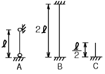
- A가 최대, C가 최소이다.
- B가 최대, C가 최소이다.
- C가 최대, A가 최소이다.
- A, B, C가 모두 같다.
(정답률: 36%)
83. 철골공사 등의 용접작업시 사용되는 가스용기의 취급상 주의사항으로서 잘못된 것은?
- 용기는 통풍 또는 환기가 잘되는 장소에 보관한다.
- 용기의 온도는 40℃이하로 유지한다.
- 가스를 사용시 밸브의 개폐는 신속히 하여야 한다.
- 용해 아세틸렌 용기는 세워서 보관한다.
(정답률: 65%)
84. 흙의 간극비의 정의로 가장 알맞은 것은?
- 공기의 부피 / 흙입자의 부피
- 공기와 물의 부피 / 흙입자의 부피
- 공기와 물의 부피 / (공기, 물, 흙입자의 부피)
- 공기의 부피 / (물, 흙입자의 부피)
(정답률: 58%)
85. 근로자의 추락재해방지를 위하여 작업발판을 설치하기 곤란한 때에 안전대를 착용하도록 하는 등의 조치가 필요한 높이는?
- 2m이상
- 3m이상
- 4m이상
- 5m이상
(정답률: 50%)
86. 부두 또는 안벽의 선을 따라 통로를 설치할 경우 폭은 얼마 이상으로 하여야 하는가?
- 60cm
- 90cm
- 120cm
- 150cm
(정답률: 57%)
87. 일반적으로 사면이 가장 위험한 경우는 어느 때인가?
- 사면이 완전 건조 상태일 때
- 사면의 수위가 서서히 상승할 때
- 사면이 완전 포화 상태일 때
- 사면의 수위가 급격히 하강할 때
(정답률: 63%)
88. 입경이 가늘고 비교적 균일하면서 느슨하게 쌓여 있는 모래 지반이 물로 포화되어 있을 때 지진이나 충격을 받으면 일시적으로 전단강도를 잃어버리는 현상은?
- 모관현상
- 보일링현상
- 틱소트로피
- 액화현상
(정답률: 35%)
89. 비계를 변경한 후 작업 전 비계의 점검사항으로 적당하지 않은 것은?
- 기둥의 침하, 변형, 변위 또는 흔들림 상태
- 손잡이의 탈락여부
- 격벽의 설치여부
- 발판재료의 손상여부 및 부착 또는 걸림상태
(정답률: 43%)
90. 달비계의 최대적재하중을 정하기 위한 안전계수 중 맞는 것은?
- 달기와이어로우프의 안전계수 : 4이상
- 달기체인의 안전계수 : 4이상
- 달비계 하부지점 안전계수(강재) : 2.5이상
- 달비계 상부지점 안전계수(목재) : 4이상
(정답률: 47%)
91. 롤러의 표면에 돌기를 만들어 부착한 것으로 돌기가 전압층에 매입되어 풍화암을 파쇄하고 흙속의 간극수압을 제거하는 롤러는?
- 머캐덤 롤러(Macadam roller)
- 탠덤 롤러(Tandem roller)
- 탬핑 롤러(Tamping roller)
- 진동 롤러(Vibrating roller)
(정답률: 37%)
92. 철근 콘크리트 공사에서 거푸집의 존치기간에 대한 설명 중 옳은 것은?
- 조강포틀랜드 시멘트는 보통포틀랜드 시멘트보다 존치기간이 길다.
- 온도가 낮을수록 일반적으로 존치기간은 길다.
- 슬래브 및 보의 밑면은 일반적으로 기둥이나 측벽보다 존치기간이 짧다.
- 슬래브 밑면 거푸집의 존치기간은 1~2일이 적당하다.
(정답률: 33%)
93. 강관비계의 종류에 따른 조립간격에 대한 설명으로 틀린 것은? (단, 틀비계는 높이가 5m미만의 것을 제외한다.)
- 단관비계 - 수직방향 - 5m
- 단관비계 - 수평방향 - 5m
- 틀비계 - 수직방향 - 8m
- 틀비계 - 수평방향 - 8m
(정답률: 40%)
94. 쇼벨계 굴착기계에 속하지 않는 것은?
- 파워쇼벨(power shovel)
- 크램셀(clamshell)
- 스크레이퍼(scraper)
- 드래그라인(dragline)
(정답률: 58%)
95. 항타기 또는 항발기의 권상용 와이어로프의 사용금지 사항에 대한 설명으로 틀린 것은?
- 이음매가 있는 것
- 필러선을 제외한 와이어 로프의 한 꼬임에서 소선의 수가 20% 이상 끊어진 것
- 지름의 감소가 공칭지름의 7%를 초과하는 것
- 심하게 변형 또는 부식된 것
(정답률: 50%)
96. 기초공사를 위하여 굴착작업을 계획하고 있다. 현장의 토사는 시험굴착해보니 보통흙 습지였다. 이때 적용할 수 있는 굴착면의 기울기 기준은?
- 1:0.3
- 1:0.5
- 1:0.8
- 1:1
(정답률: 51%)
97. 다음 그림과 같이 굴착하는 도갱은?
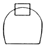
- 저부도갱
- 정부도갱
- 측변도갱
- 저하도갱
(정답률: 43%)
98. 다음 중 수중 굴착작업시 가장 적합한 공법은?
- 아일랜드(Island)공법
- 트랜치 커트(Trench Cut)공법
- 케이슨(Caisson)공법
- 프로우팅(Floating)공법
(정답률: 25%)
99. "바닥으로부터 짐 윗면까지의 높이가 ( )m 이상인 화물 자동차에 짐을 싣는 작업 또는 내리는 작업을 하는 때에는 추락에 의한 근로자의 위험을 방지하기 위해 안전하게 상승 또는 하강하기 위한 설비를 설치하여야 한다." ( )안에 적합한 것은?
- 2
- 3
- 4
- 5
(정답률: 58%)
100. 건설공사 현장 가설통로 설치기준으로 맞는 것은?
- 가설통로의 경사가 15° 이내일 때 손잡이를 설치 하여야 한다.
- 수직갱에 가설된 통로의 길이가 10m를 초과하면 8m 이내에 계단참을 설치하여야 한다.
- 경사각이 15° 미만이면 일반적으로 미끄럼방지 장치를 하지 않아도 된다.
- 높이가 7m인 비계다리에는 6m이내 마다 계단참을 설치하여야 한다.
(정답률: 33%)